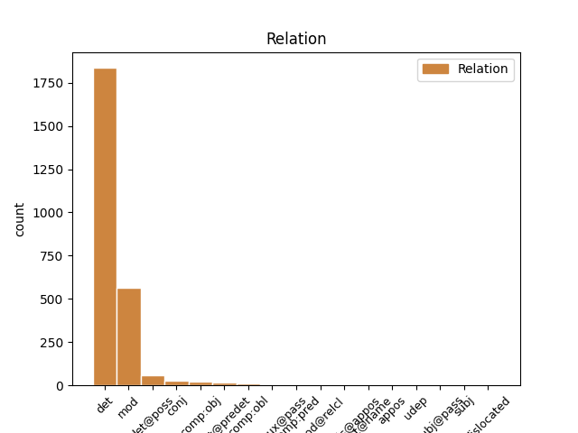
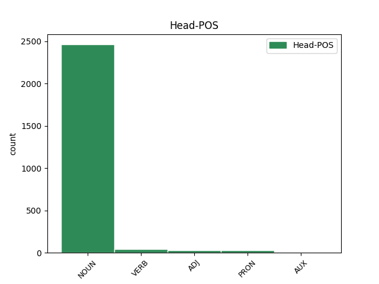
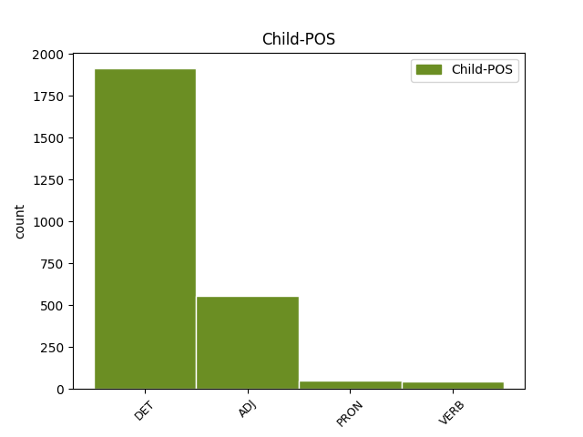

Distribution of features within this leaf



Agreement Rules sorted by frequency.
- When the dependent token is the determiner(det) of the head token, and the dependent token is DET.
1 Salvini _ _ _ _ 0 _ _ _
2 : _ _ _ _ 0 _ _ _
3 " _ _ _ _ 0 _ _ _
4 A _ _ _ _ 0 _ _ _
5 settembre _ _ _ _ 0 _ _ _
6 fermerò _ _ _ _ 0 _ _ _
7 l' _ _ _ _ 0 _ _ _
8 Italia _ _ _ _ 0 _ _ _
9 per _ _ _ _ 0 _ _ _
10 tre _ _ _ _ 0 _ _ _
11 giorni _ _ _ _ 0 _ _ _
12 " _ _ _ _ 0 _ _ _
13 . _ _ _ _ 0 _ _ _
14 Si _ _ _ _ 0 _ _ _
15 sta _ _ _ _ 0 _ _ _
16 preparando _ _ _ _ 0 _ _ _
17 a _ _ _ _ 0 _ _ _
18 dire _ _ _ _ 0 _ _ _
19 la il DET RD Definite=Def|Gender=Fem|Number=Sing|PronType=Art 20 det _ _
20 stronzata stronzata NOUN S Gender=Fem|Number=Sing 0 _ _ _
21 definitiva _ _ _ _ 0 _ _ _
22 . _ _ _ _ 0 _ _ _
23 [ _ _ _ _ 0 _ _ _
24 comagirl00 _ _ _ _ 0 _ _ _
25 ] _ _ _ _ 0 _ _ _
1 Salvini _ _ _ _ 0 _ _ _
2 : _ _ _ _ 0 _ _ _
3 " _ _ _ _ 0 _ _ _
4 A _ _ _ _ 0 _ _ _
5 settembre _ _ _ _ 0 _ _ _
6 fermerò _ _ _ _ 0 _ _ _
7 l' _ _ _ _ 0 _ _ _
8 Italia _ _ _ _ 0 _ _ _
9 per _ _ _ _ 0 _ _ _
10 tre _ _ _ _ 0 _ _ _
11 giorni _ _ _ _ 0 _ _ _
12 " _ _ _ _ 0 _ _ _
13 . _ _ _ _ 0 _ _ _
14 Si _ _ _ _ 0 _ _ _
15 sta _ _ _ _ 0 _ _ _
16 preparando _ _ _ _ 0 _ _ _
17 a _ _ _ _ 0 _ _ _
18 dire _ _ _ _ 0 _ _ _
19 la _ _ _ _ 0 _ _ _
20 stronzata stronzata NOUN S Gender=Fem|Number=Sing 0 _ _ _
21 definitiva definitivo ADJ A Gender=Fem|Number=Sing 20 mod _ SpaceAfter=No
22 . _ _ _ _ 0 _ _ _
23 [ _ _ _ _ 0 _ _ _
24 comagirl00 _ _ _ _ 0 _ _ _
25 ] _ _ _ _ 0 _ _ _
1 #labuonascuola _ _ _ _ 0 _ _ _
2 NO _ _ _ _ 0 _ _ _
3 A _ _ _ _ 0 _ _ _
4 LA _ _ _ _ 0 _ _ _
5 SUPPLENTITE _ _ _ _ 0 _ _ _
6 ! _ _ _ _ 0 _ _ _
7 SI _ _ _ _ 0 _ _ _
8 A _ _ _ _ 0 _ _ _
9 LA _ _ _ _ 0 _ _ _
10 SUPPOSTITE _ _ _ _ 0 _ _ _
11 ! _ _ _ _ 0 _ _ _
12 Insegnanti _ _ _ _ 0 _ _ _
13 preparate _ _ _ _ 0 _ _ _
14 i _ _ _ _ 0 _ _ _
15 vostri vostro DET AP Gender=Masc|Number=Plur|Poss=Yes|PronType=Prs 16 det@poss _ _
16 CULI culo NOUN S Gender=Masc|Number=Plur 0 _ _ _
17 ! _ _ _ _ 0 _ _ _
1 Governo _ _ _ _ 0 _ _ _
2 Monti _ _ _ _ 0 _ _ _
3 , _ _ _ _ 0 _ _ _
4 Alenia _ _ _ _ 0 _ _ _
5 : _ _ _ _ 0 _ _ _
6 piano piano NOUN S Gender=Masc|Number=Sing 0 _ _ _
7 di _ _ _ _ 0 _ _ _
8 rilancio _ _ _ _ 0 _ _ _
9 colpito colpire VERB V Gender=Masc|Number=Sing|Tense=Past|VerbForm=Part 6 mod _ _
10 e _ _ _ _ 0 _ _ _
11 affondato _ _ _ _ 0 _ _ _
12 http://t.co/f27VgQVS _ _ _ _ 0 _ _ _
1 La _ _ _ _ 0 _ _ _
2 Turchia _ _ _ _ 0 _ _ _
3 abbatte _ _ _ _ 0 _ _ _
4 un _ _ _ _ 0 _ _ _
5 aereo _ _ _ _ 0 _ _ _
6 russo _ _ _ _ 0 _ _ _
7 . _ _ _ _ 0 _ _ _
8 E _ _ _ _ 0 _ _ _
9 finalmente _ _ _ _ 0 _ _ _
10 Erdogan _ _ _ _ 0 _ _ _
11 ce _ _ _ _ 0 _ _ _
12 lo lo PRON PC Clitic=Yes|Gender=Masc|Number=Sing|Person=3|PronType=Prs 14 comp:obj _ _
13 siamo _ _ _ _ 0 _ _ _
14 tolto togliere VERB V Gender=Masc|Number=Sing|Tense=Past|VerbForm=Part 0 _ _ _
15 da _ _ _ _ 0 _ _ _
16 le _ _ _ _ 0 _ _ _
17 palle _ _ _ _ 0 _ _ _
18 . _ _ _ _ 0 _ _ _
19 [ _ _ _ _ 0 _ _ _
20 @user _ _ _ _ 0 _ _ _
21 ] _ _ _ _ 0 _ _ _
1 Renzi _ _ _ _ 0 _ _ _
2 : _ _ _ _ 0 _ _ _
3 “ _ _ _ _ 0 _ _ _
4 Senza _ _ _ _ 0 _ _ _
5 Napolitano _ _ _ _ 0 _ _ _
6 non _ _ _ _ 0 _ _ _
7 si _ _ _ _ 0 _ _ _
8 possono _ _ _ _ 0 _ _ _
9 fare _ _ _ _ 0 _ _ _
10 le _ _ _ _ 0 _ _ _
11 riforme _ _ _ _ 0 _ _ _
12 ” _ _ _ _ 0 _ _ _
13 . _ _ _ _ 0 _ _ _
14 Ecco _ _ _ _ 0 _ _ _
15 perché _ _ _ _ 0 _ _ _
16 tutta tutto DET T Gender=Fem|Number=Sing|PronType=Tot 18 det@predet _ _
17 questa _ _ _ _ 0 _ _ _
18 fretta fretta NOUN S Gender=Fem|Number=Sing 0 _ _ _
19 . _ _ _ _ 0 _ _ _
20 [ _ _ _ _ 0 _ _ _
21 CONTINUA _ _ _ _ 0 _ _ _
22 su _ _ _ _ 0 _ _ _
23 http://t.co/oDPUtx2DvV _ _ _ _ 0 _ _ _
24 ] _ _ _ _ 0 _ _ _
1 Schettino _ _ _ _ 0 _ _ _
2 fa _ _ _ _ 0 _ _ _
3 campagna _ _ _ _ 0 _ _ _
4 elettorale _ _ _ _ 0 _ _ _
5 per _ _ _ _ 0 _ _ _
6 il _ _ _ _ 0 _ _ _
7 Pd _ _ _ _ 0 _ _ _
8 . _ _ _ _ 0 _ _ _
9 Gli lo PRON PC Clitic=Yes|Gender=Masc|Number=Sing|Person=3|PronType=Prs 11 comp:obl _ _
10 hanno _ _ _ _ 0 _ _ _
11 dato dare VERB V Gender=Masc|Number=Sing|Tense=Past|VerbForm=Part 0 _ _ _
12 i _ _ _ _ 0 _ _ _
13 servizi _ _ _ _ 0 _ _ _
14 sociali _ _ _ _ 0 _ _ _
15 . _ _ _ _ 0 _ _ _
16 [ _ _ _ _ 0 _ _ _
17 @user _ _ _ _ 0 _ _ _
18 ] _ _ _ _ 0 _ _ _
1 Web _ _ _ _ 0 _ _ _
2 - _ _ _ _ 0 _ _ _
3 design _ _ _ _ 0 _ _ _
4 tutto _ _ _ _ 0 _ _ _
5 bello bello ADJ A Gender=Masc|Number=Sing 0 _ _ _
6 e _ _ _ _ 0 _ _ _
7 colorato colorato ADJ A Gender=Masc|Number=Sing 5 conj _ SpaceAfter=No
8 , _ _ _ _ 0 _ _ _
9 ma _ _ _ _ 0 _ _ _
10 #labuonascuola _ _ _ _ 0 _ _ _
11 mi _ _ _ _ 0 _ _ _
12 fa _ _ _ _ 0 _ _ _
13 scegliere _ _ _ _ 0 _ _ _
14 tra _ _ _ _ 0 _ _ _
15 ciò _ _ _ _ 0 _ _ _
16 che _ _ _ _ 0 _ _ _
17 non _ _ _ _ 0 _ _ _
18 amo _ _ _ _ 0 _ _ _
19 e _ _ _ _ 0 _ _ _
20 ciò _ _ _ _ 0 _ _ _
21 che _ _ _ _ 0 _ _ _
22 amo _ _ _ _ 0 _ _ _
23 ancor _ _ _ _ 0 _ _ _
24 meno _ _ _ _ 0 _ _ _
25 . _ _ _ _ 0 _ _ _
26 Quindi _ _ _ _ 0 _ _ _
27 non _ _ _ _ 0 _ _ _
28 lo _ _ _ _ 0 _ _ _
29 compilerò _ _ _ _ 0 _ _ _
30 . _ _ _ _ 0 _ _ _
1 Web _ _ _ _ 0 _ _ _
2 - _ _ _ _ 0 _ _ _
3 design _ _ _ _ 0 _ _ _
4 tutto _ _ _ _ 0 _ _ _
5 bello _ _ _ _ 0 _ _ _
6 e _ _ _ _ 0 _ _ _
7 colorato _ _ _ _ 0 _ _ _
8 , _ _ _ _ 0 _ _ _
9 ma _ _ _ _ 0 _ _ _
10 #labuonascuola _ _ _ _ 0 _ _ _
11 mi _ _ _ _ 0 _ _ _
12 fa _ _ _ _ 0 _ _ _
13 scegliere _ _ _ _ 0 _ _ _
14 tra _ _ _ _ 0 _ _ _
15 ciò ciò PRON PD Gender=Masc|Number=Sing|PronType=Dem 0 _ _ _
16 che _ _ _ _ 0 _ _ _
17 non _ _ _ _ 0 _ _ _
18 amo _ _ _ _ 0 _ _ _
19 e _ _ _ _ 0 _ _ _
20 ciò ciò PRON PD Gender=Masc|Number=Sing|PronType=Dem 15 conj _ _
21 che _ _ _ _ 0 _ _ _
22 amo _ _ _ _ 0 _ _ _
23 ancor _ _ _ _ 0 _ _ _
24 meno _ _ _ _ 0 _ _ _
25 . _ _ _ _ 0 _ _ _
26 Quindi _ _ _ _ 0 _ _ _
27 non _ _ _ _ 0 _ _ _
28 lo _ _ _ _ 0 _ _ _
29 compilerò _ _ _ _ 0 _ _ _
30 . _ _ _ _ 0 _ _ _
1 Non _ _ _ _ 0 _ _ _
2 mi _ _ _ _ 0 _ _ _
3 fido _ _ _ _ 0 _ _ _
4 di _ _ _ _ 0 _ _ _
5 Mario _ _ _ _ 0 _ _ _
6 Monti _ _ _ _ 0 _ _ _
7 . _ _ _ _ 0 _ _ _
8 Mai _ _ _ _ 0 _ _ _
9 fidar _ _ _ _ 0 _ _ _
10 si _ _ _ _ 0 _ _ _
11 di _ _ _ _ 0 _ _ _
12 chi _ _ _ _ 0 _ _ _
13 non _ _ _ _ 0 _ _ _
14 è _ _ _ _ 0 _ _ _
15 stato essere AUX VA Gender=Masc|Number=Sing|Tense=Past|VerbForm=Part 0 _ _ _
16 coinvolto coinvolgere VERB V Gender=Masc|Number=Sing|Tense=Past|VerbForm=Part 15 comp:aux@pass _ _
17 in _ _ _ _ 0 _ _ _
18 uno _ _ _ _ 0 _ _ _
19 scandalo _ _ _ _ 0 _ _ _
20 sessuale _ _ _ _ 0 _ _ _
21 . _ _ _ _ 0 _ _ _
1 Governo _ _ _ _ 0 _ _ _
2 Monti _ _ _ _ 0 _ _ _
3 , _ _ _ _ 0 _ _ _
4 Alenia _ _ _ _ 0 _ _ _
5 : _ _ _ _ 0 _ _ _
6 piano _ _ _ _ 0 _ _ _
7 di _ _ _ _ 0 _ _ _
8 rilancio _ _ _ _ 0 _ _ _
9 colpito colpire VERB V Gender=Masc|Number=Sing|Tense=Past|VerbForm=Part 0 _ _ _
10 e _ _ _ _ 0 _ _ _
11 affondato affondare VERB V Gender=Masc|Number=Sing|Tense=Past|VerbForm=Part 9 conj _ _
12 http://t.co/f27VgQVS _ _ _ _ 0 _ _ _
1 @user1 _ _ _ _ 0 _ _ _
2 utilissimo _ _ _ _ 0 _ _ _
3 ! _ _ _ _ 0 _ _ _
4 Da _ _ _ _ 0 _ _ _
5 fare _ _ _ _ 0 _ _ _
6 leggere _ _ _ _ 0 _ _ _
7 a _ _ _ _ 0 _ _ _
8 chi _ _ _ _ 0 _ _ _
9 ha _ _ _ _ 0 _ _ _
10 redatto _ _ _ _ 0 _ _ _
11 quel _ _ _ _ 0 _ _ _
12 mostro _ _ _ _ 0 _ _ _
13 di _ _ _ _ 0 _ _ _
14 documento documento NOUN S Gender=Masc|Number=Sing 0 _ _ _
15 chiamato chiamare VERB V Gender=Masc|Number=Sing|Tense=Past|VerbForm=Part 14 mod@relcl _ _
16 #labuonascuola _ _ _ _ 0 _ _ _
17 @user2 _ _ _ _ 0 _ _ _
1 @user _ _ _ _ 0 _ _ _
2 RIFORMA riforma NOUN S Gender=Fem|Number=Sing 0 _ _ _
3 : _ _ _ _ 0 _ _ _
4 una uno PRON PI Definite=Ind|Gender=Fem|Number=Sing|PronType=Art 2 parataxis@appos _ _
5 di _ _ _ _ 0 _ _ _
6 le _ _ _ _ 0 _ _ _
7 tante _ _ _ _ 0 _ _ _
8 che _ _ _ _ 0 _ _ _
9 i _ _ _ _ 0 _ _ _
10 partiti _ _ _ _ 0 _ _ _
11 hanno _ _ _ _ 0 _ _ _
12 imposto _ _ _ _ 0 _ _ _
13 ( _ _ _ _ 0 _ _ _
14 ahahhha _ _ _ _ 0 _ _ _
15 ) _ _ _ _ 0 _ _ _
16 a _ _ _ _ 0 _ _ _
17 il _ _ _ _ 0 _ _ _
18 Governo _ _ _ _ 0 _ _ _
19 Monti _ _ _ _ 0 _ _ _
20 . _ _ _ _ 0 _ _ _
21 #puttanate _ _ _ _ 0 _ _ _
22 #campacavallochelerbacresce _ _ _ _ 0 _ _ _
1 Anche _ _ _ _ 0 _ _ _
2 il _ _ _ _ 0 _ _ _
3 lancio _ _ _ _ 0 _ _ _
4 di _ _ _ _ 0 _ _ _
5 uova _ _ _ _ 0 _ _ _
6 marce _ _ _ _ 0 _ _ _
7 sarebbe _ _ _ _ 0 _ _ _
8 stato essere AUX V Gender=Masc|Number=Sing|Tense=Past|VerbForm=Part 0 _ _ _
9 didatticamente _ _ _ _ 0 _ _ _
10 più _ _ _ _ 0 _ _ _
11 appropriato appropriato ADJ A Gender=Masc|Number=Sing 8 comp:pred _ _
12 di _ _ _ _ 0 _ _ _
13 il _ _ _ _ 0 _ _ _
14 coro _ _ _ _ 0 _ _ _
15 e _ _ _ _ 0 _ _ _
16 di _ _ _ _ 0 _ _ _
17 i _ _ _ _ 0 _ _ _
18 fiori _ _ _ _ 0 _ _ _
19 http://t.co/LOPwr3aGQL _ _ _ _ 0 _ _ _
20 #labuonascuola _ _ _ _ 0 _ _ _
1 Salento _ _ _ _ 0 _ _ _
2 , _ _ _ _ 0 _ _ _
3 extracomunitario _ _ _ _ 0 _ _ _
4 muore _ _ _ _ 0 _ _ _
5 mentre _ _ _ _ 0 _ _ _
6 raccoglie _ _ _ _ 0 _ _ _
7 pomodori _ _ _ _ 0 _ _ _
8 . _ _ _ _ 0 _ _ _
9 Era _ _ _ _ 0 _ _ _
10 l' _ _ _ _ 0 _ _ _
11 unico _ _ _ _ 0 _ _ _
12 modo _ _ _ _ 0 _ _ _
13 per _ _ _ _ 0 _ _ _
14 prender _ _ _ _ 0 _ _ _
15 si _ _ _ _ 0 _ _ _
16 una _ _ _ _ 0 _ _ _
17 pausa _ _ _ _ 0 _ _ _
18 . _ _ _ _ 0 _ _ _
19 [ _ _ _ _ 0 _ _ _
20 ottone ottone NOUN S Gender=Masc|Number=Sing 0 _ _ _
21 erminio erminio ADJ A Gender=Masc|Number=Sing 20 flat@name _ SpaceAfter=No
22 ] _ _ _ _ 0 _ _ _
1 Io _ _ _ _ 0 _ _ _
2 a _ _ _ _ 0 _ _ _
3 quelli _ _ _ _ 0 _ _ _
4 che _ _ _ _ 0 _ _ _
5 sono _ _ _ _ 0 _ _ _
6 contro _ _ _ _ 0 _ _ _
7 le _ _ _ _ 0 _ _ _
8 unioni _ _ _ _ 0 _ _ _
9 omosessuali _ _ _ _ 0 _ _ _
10 gli il DET RD Definite=Def|Gender=Masc|Number=Plur|PronType=Art 11 comp:obl _ _
11 bloccherei blocchereo NOUN S Gender=Masc|Number=Plur 0 _ _ _
12 la _ _ _ _ 0 _ _ _
13 categoria _ _ _ _ 0 _ _ _
14 " _ _ _ _ 0 _ _ _
15 lesbian _ _ _ _ 0 _ _ _
16 " _ _ _ _ 0 _ _ _
17 . _ _ _ _ 0 _ _ _
18 [ _ _ _ _ 0 _ _ _
19 @user _ _ _ _ 0 _ _ _
20 ] _ _ _ _ 0 _ _ _
1 Roma _ _ _ _ 0 _ _ _
2 , _ _ _ _ 0 _ _ _
3 nomade _ _ _ _ 0 _ _ _
4 defeca _ _ _ _ 0 _ _ _
5 davanti _ _ _ _ 0 _ _ _
6 a _ _ _ _ 0 _ _ _
7 il _ _ _ _ 0 _ _ _
8 Quirinale _ _ _ _ 0 _ _ _
9 . _ _ _ _ 0 _ _ _
10 Avendo _ _ _ _ 0 _ _ _
11 lo _ _ _ _ 0 _ _ _
12 trovato trovare VERB V Gender=Masc|Number=Sing|Tense=Past|VerbForm=Part 0 _ _ _
13 occupato occupato VERB V Gender=Masc|Number=Sing|Tense=Past|VerbForm=Part 12 comp:pred _ SpaceAfter=No
14 . _ _ _ _ 0 _ _ _
15 [ _ _ _ _ 0 _ _ _
16 @user _ _ _ _ 0 _ _ _
17 ] _ _ _ _ 0 _ _ _
1 Amici amico ADJ A Gender=Masc|Number=Plur 0 _ _ _
2 miei mio DET AP Gender=Masc|Number=Plur|Poss=Yes|PronType=Prs 1 flat@name _ _
3 - _ _ _ _ 0 _ _ _
4 Raccolta _ _ _ _ 0 _ _ _
5 supercazzole _ _ _ _ 0 _ _ _
6 : _ _ _ _ 0 _ _ _
7 http://t.co/vPUQt0dDfl _ _ _ _ 0 _ _ _
8 via _ _ _ _ 0 _ _ _
9 @user _ _ _ _ 0 _ _ _
10 antani _ _ _ _ 0 _ _ _
11 la _ _ _ _ 0 _ _ _
12 buona _ _ _ _ 0 _ _ _
13 scuola _ _ _ _ 0 _ _ _
14 con _ _ _ _ 0 _ _ _
15 scappellamento _ _ _ _ 0 _ _ _
16 a _ _ _ _ 0 _ _ _
17 destra _ _ _ _ 0 _ _ _
1 Signorini _ _ _ _ 0 _ _ _
2 : _ _ _ _ 0 _ _ _
3 “ _ _ _ _ 0 _ _ _
4 Che _ _ _ _ 0 _ _ _
5 differenza _ _ _ _ 0 _ _ _
6 c' _ _ _ _ 0 _ _ _
7 è _ _ _ _ 0 _ _ _
8 tra _ _ _ _ 0 _ _ _
9 il _ _ _ _ 0 _ _ _
10 cono _ _ _ _ 0 _ _ _
11 di _ _ _ _ 0 _ _ _
12 la _ _ _ _ 0 _ _ _
13 Madia _ _ _ _ 0 _ _ _
14 e _ _ _ _ 0 _ _ _
15 il _ _ _ _ 0 _ _ _
16 calippo _ _ _ _ 0 _ _ _
17 di _ _ _ _ 0 _ _ _
18 la _ _ _ _ 0 _ _ _
19 Pascale _ _ _ _ 0 _ _ _
20 ? _ _ _ _ 0 _ _ _
21 “ _ _ _ _ 0 _ _ _
22 . _ _ _ _ 0 _ _ _
23 Il _ _ _ _ 0 _ _ _
24 primo _ _ _ _ 0 _ _ _
25 è _ _ _ _ 0 _ _ _
26 un _ _ _ _ 0 _ _ _
27 gelato _ _ _ _ 0 _ _ _
28 , _ _ _ _ 0 _ _ _
29 l' _ _ _ _ 0 _ _ _
30 altro altro PRON PI Gender=Masc|Number=Sing|PronType=Ind 32 subj _ _
31 un _ _ _ _ 0 _ _ _
32 curriculum curriculum NOUN S Gender=Masc|Number=Sing 0 _ _ _
33 . _ _ _ _ 0 _ _ _
34 [ _ _ _ _ 0 _ _ _
35 @user _ _ _ _ 0 _ _ _
36 ] _ _ _ _ 0 _ _ _
1 #labuonascuola _ _ _ _ 0 _ _ _
2 Fornitura _ _ _ _ 0 _ _ _
3 illimitata _ _ _ _ 0 _ _ _
4 di _ _ _ _ 0 _ _ _
5 rotoli _ _ _ _ 0 _ _ _
6 di _ _ _ _ 0 _ _ _
7 carta _ _ _ _ 0 _ _ _
8 igienica _ _ _ _ 0 _ _ _
9 e _ _ _ _ 0 _ _ _
10 poi _ _ _ _ 0 _ _ _
11 , _ _ _ _ 0 _ _ _
12 piano _ _ _ _ 0 _ _ _
13 piano _ _ _ _ 0 _ _ _
14 , _ _ _ _ 0 _ _ _
15 tutti tutto PRON PI Gender=Masc|Number=Plur|PronType=Ind 18 det@predet _ _
16 gli _ _ _ _ 0 _ _ _
17 altri _ _ _ _ 0 _ _ _
18 aspetti aspetto NOUN S Gender=Masc|Number=Plur 0 _ _ _
19 meno _ _ _ _ 0 _ _ _
20 importanti _ _ _ _ 0 _ _ _
21 . _ _ _ _ 0 _ _ _
1 Caro _ _ _ _ 0 _ _ _
2 mario _ _ _ _ 0 _ _ _
3 #monti _ _ _ _ 0 _ _ _
4 , _ _ _ _ 0 _ _ _
5 bella _ _ _ _ 0 _ _ _
6 battuta battuta NOUN S Gender=Fem|Number=Sing 0 _ _ _
7 questa questo PRON PD Gender=Fem|Number=Sing|PronType=Dem 6 appos _ _
8 di _ _ _ _ 0 _ _ _
9 il _ _ _ _ 0 _ _ _
10 #postofisso _ _ _ _ 0 _ _ _
11 fa _ _ _ _ 0 _ _ _
12 ridere _ _ _ _ 0 _ _ _
13 A _ _ _ _ 0 _ _ _
14 IL _ _ _ _ 0 _ _ _
15 CAZZO _ _ _ _ 0 _ _ _
16 ! _ _ _ _ 0 _ _ _
1 @user1 _ _ _ _ 0 _ _ _
2 @user2 _ _ _ _ 0 _ _ _
3 riforma _ _ _ _ 0 _ _ _
4 scuola _ _ _ _ 0 _ _ _
5 diventato diventare VERB V Gender=Masc|Number=Sing|Tense=Past|VerbForm=Part 0 _ _ _
6 un _ _ _ _ 0 _ _ _
7 questionario questionario ADJ A Gender=Masc|Number=Sing 5 comp:obj _ _
8 on-line _ _ _ _ 0 _ _ _
9 . _ _ _ _ 0 _ _ _
10 Aspettiamo _ _ _ _ 0 _ _ _
11 con _ _ _ _ 0 _ _ _
12 ansia _ _ _ _ 0 _ _ _
13 quello _ _ _ _ 0 _ _ _
14 su _ _ _ _ 0 _ _ _
15 art.18 _ _ _ _ 0 _ _ _
16 così _ _ _ _ 0 _ _ _
17 passano _ _ _ _ 0 _ _ _
18 altri _ _ _ _ 0 _ _ _
19 6 _ _ _ _ 0 _ _ _
20 mesi _ _ _ _ 0 _ _ _
21 . _ _ _ _ 0 _ _ _
1 @user1 _ _ _ _ 0 _ _ _
2 @user2 _ _ _ _ 0 _ _ _
3 riforma _ _ _ _ 0 _ _ _
4 scuola _ _ _ _ 0 _ _ _
5 diventato _ _ _ _ 0 _ _ _
6 un _ _ _ _ 0 _ _ _
7 questionario _ _ _ _ 0 _ _ _
8 on-line _ _ _ _ 0 _ _ _
9 . _ _ _ _ 0 _ _ _
10 Aspettiamo _ _ _ _ 0 _ _ _
11 con _ _ _ _ 0 _ _ _
12 ansia _ _ _ _ 0 _ _ _
13 quello _ _ _ _ 0 _ _ _
14 su _ _ _ _ 0 _ _ _
15 art.18 _ _ _ _ 0 _ _ _
16 così _ _ _ _ 0 _ _ _
17 passano _ _ _ _ 0 _ _ _
18 altri altro PRON PI Gender=Masc|Number=Plur|PronType=Ind 20 mod _ _
19 6 _ _ _ _ 0 _ _ _
20 mesi mese NOUN S Gender=Masc|Number=Plur 0 _ _ _
21 . _ _ _ _ 0 _ _ _
1 Arrestati arrestare VERB V Gender=Masc|Number=Plur|Tense=Past|VerbForm=Part 0 _ _ _
2 11 _ _ _ _ 0 _ _ _
3 fedelissimi fedele ADJ A Degree=Abs|Gender=Masc|Number=Plur 1 subj@pass _ _
4 di _ _ _ _ 0 _ _ _
5 Messina _ _ _ _ 0 _ _ _
6 Denaro _ _ _ _ 0 _ _ _
7 . _ _ _ _ 0 _ _ _
8 È _ _ _ _ 0 _ _ _
9 l' _ _ _ _ 0 _ _ _
10 occasione _ _ _ _ 0 _ _ _
11 buona _ _ _ _ 0 _ _ _
12 per _ _ _ _ 0 _ _ _
13 mettere _ _ _ _ 0 _ _ _
14 a _ _ _ _ 0 _ _ _
15 la _ _ _ _ 0 _ _ _
16 prova _ _ _ _ 0 _ _ _
17 i _ _ _ _ 0 _ _ _
18 panchinari _ _ _ _ 0 _ _ _
19 . _ _ _ _ 0 _ _ _
20 [ _ _ _ _ 0 _ _ _
21 sangancillo _ _ _ _ 0 _ _ _
22 ] _ _ _ _ 0 _ _ _
1 Primi _ _ _ _ 0 _ _ _
2 effetti _ _ _ _ 0 _ _ _
3 di _ _ _ _ 0 _ _ _
4 la il DET RD Definite=Def|Gender=Fem|Number=Sing|PronType=Art 5 comp:obj _ _
5 riforma riforma NOUN S Gender=Fem|Number=Sing 0 _ _ _
6 #renzi _ _ _ _ 0 _ _ _
7 : _ _ _ _ 0 _ _ _
8 la _ _ _ _ 0 _ _ _
9 rende _ _ _ _ 0 _ _ _
10 pubblica _ _ _ _ 0 _ _ _
11 e _ _ _ _ 0 _ _ _
12 il _ _ _ _ 0 _ _ _
13 giorno _ _ _ _ 0 _ _ _
14 dopo _ _ _ _ 0 _ _ _
15 muore _ _ _ _ 0 _ _ _
16 la _ _ _ _ 0 _ _ _
17 Falcucci _ _ _ _ 0 _ _ _
18 . _ _ _ _ 0 _ _ _
19 #labuonascuola _ _ _ _ 0 _ _ _
1 G20 _ _ _ _ 0 _ _ _
2 , _ _ _ _ 0 _ _ _
3 Renzi _ _ _ _ 0 _ _ _
4 per _ _ _ _ 0 _ _ _
5 la _ _ _ _ 0 _ _ _
6 prima _ _ _ _ 0 _ _ _
7 volta _ _ _ _ 0 _ _ _
8 a _ _ _ _ 0 _ _ _
9 il _ _ _ _ 0 _ _ _
10 tavolo _ _ _ _ 0 _ _ _
11 di _ _ _ _ 0 _ _ _
12 i _ _ _ _ 0 _ _ _
13 grandi _ _ _ _ 0 _ _ _
14 . _ _ _ _ 0 _ _ _
15 “ _ _ _ _ 0 _ _ _
16 Ecco _ _ _ _ 0 _ _ _
17 lo lo PRON PC Clitic=Yes|Gender=Masc|Number=Sing|Person=3|PronType=Prs 21 dislocated _ _
18 qui _ _ _ _ 0 _ _ _
19 il _ _ _ _ 0 _ _ _
20 nostro _ _ _ _ 0 _ _ _
21 ometto ometto NOUN S Gender=Masc|Number=Sing 0 _ _ _
22 ! _ _ _ _ 0 _ _ _
23 “ _ _ _ _ 0 _ _ _
24 [ _ _ _ _ 0 _ _ _
25 marcthulhu _ _ _ _ 0 _ _ _
26 ] _ _ _ _ 0 _ _ _
1 Questo _ _ _ _ 0 _ _ _
2 non _ _ _ _ 0 _ _ _
3 è _ _ _ _ 0 _ _ _
4 un _ _ _ _ 0 _ _ _
5 paese _ _ _ _ 0 _ _ _
6 per _ _ _ _ 0 _ _ _
7 giovani _ _ _ _ 0 _ _ _
8 . _ _ _ _ 0 _ _ _
9 Avrei _ _ _ _ 0 _ _ _
10 voluto _ _ _ _ 0 _ _ _
11 che _ _ _ _ 0 _ _ _
12 la _ _ _ _ 0 _ _ _
13 prima _ _ _ _ 0 _ _ _
14 riforma _ _ _ _ 0 _ _ _
15 di _ _ _ _ 0 _ _ _
16 il _ _ _ _ 0 _ _ _
17 governo _ _ _ _ 0 _ _ _
18 #Monti _ _ _ _ 0 _ _ _
19 fosse _ _ _ _ 0 _ _ _
20 stata essere AUX V Gender=Fem|Number=Sing|Tense=Past|VerbForm=Part 0 _ _ _
21 quella quello PRON PD Gender=Fem|Number=Sing|PronType=Dem 20 comp:pred _ _
22 di _ _ _ _ 0 _ _ _
23 il _ _ _ _ 0 _ _ _
24 lavoro _ _ _ _ 0 _ _ _
25 , _ _ _ _ 0 _ _ _
26 non _ _ _ _ 0 _ _ _
27 di _ _ _ _ 0 _ _ _
28 le _ _ _ _ 0 _ _ _
29 pensioni _ _ _ _ 0 _ _ _
30 . _ _ _ _ 0 _ _ _
1 Web _ _ _ _ 0 _ _ _
2 - _ _ _ _ 0 _ _ _
3 design _ _ _ _ 0 _ _ _
4 tutto tutto PRON PI Gender=Masc|Number=Sing|PronType=Ind 5 udep _ _
5 bello bello ADJ A Gender=Masc|Number=Sing 0 _ _ _
6 e _ _ _ _ 0 _ _ _
7 colorato _ _ _ _ 0 _ _ _
8 , _ _ _ _ 0 _ _ _
9 ma _ _ _ _ 0 _ _ _
10 #labuonascuola _ _ _ _ 0 _ _ _
11 mi _ _ _ _ 0 _ _ _
12 fa _ _ _ _ 0 _ _ _
13 scegliere _ _ _ _ 0 _ _ _
14 tra _ _ _ _ 0 _ _ _
15 ciò _ _ _ _ 0 _ _ _
16 che _ _ _ _ 0 _ _ _
17 non _ _ _ _ 0 _ _ _
18 amo _ _ _ _ 0 _ _ _
19 e _ _ _ _ 0 _ _ _
20 ciò _ _ _ _ 0 _ _ _
21 che _ _ _ _ 0 _ _ _
22 amo _ _ _ _ 0 _ _ _
23 ancor _ _ _ _ 0 _ _ _
24 meno _ _ _ _ 0 _ _ _
25 . _ _ _ _ 0 _ _ _
26 Quindi _ _ _ _ 0 _ _ _
27 non _ _ _ _ 0 _ _ _
28 lo _ _ _ _ 0 _ _ _
29 compilerò _ _ _ _ 0 _ _ _
30 . _ _ _ _ 0 _ _ _
Disagree Examples:
1 @user _ _ _ _ 0 _ _ _
2 Con _ _ _ _ 0 _ _ _
3 i _ _ _ _ 0 _ _ _
4 prezzi _ _ _ _ 0 _ _ _
5 che _ _ _ _ 0 _ _ _
6 adotta _ _ _ _ 0 _ _ _
7 , _ _ _ _ 0 _ _ _
8 non _ _ _ _ 0 _ _ _
9 sempre _ _ _ _ 0 _ _ _
10 a _ _ _ _ 0 _ _ _
11 buon _ _ _ _ 0 _ _ _
12 mercato _ _ _ _ 0 _ _ _
13 , _ _ _ _ 0 _ _ _
14 oltre _ _ _ _ 0 _ _ _
15 a _ _ _ _ 0 _ _ _
16 la _ _ _ _ 0 _ _ _
17 depressione _ _ _ _ 0 _ _ _
18 fa _ _ _ _ 0 _ _ _
19 venire _ _ _ _ 0 _ _ _
20 la il DET RD Definite=Def|Gender=Fem|Number=Sing|PronType=Art 21 det _ _
21 scogliosi scoglioso NOUN S Gender=Masc|Number=Plur 0 _ _ _
22 x _ _ _ _ 0 _ _ _
23 la _ _ _ _ 0 _ _ _
24 " _ _ _ _ 0 _ _ _
25 comodità _ _ _ _ 0 _ _ _
26 " _ _ _ _ 0 _ _ _
27 di _ _ _ _ 0 _ _ _
28 i _ _ _ _ 0 _ _ _
29 sedili _ _ _ _ 0 _ _ _
30 ! _ _ _ _ 0 _ _ _
1 Papa' _ _ _ _ 0 _ _ _
2 cinque _ _ _ _ 0 _ _ _
3 anni _ _ _ _ 0 _ _ _
4 fa _ _ _ _ 0 _ _ _
5 siamo _ _ _ _ 0 _ _ _
6 stati _ _ _ _ 0 _ _ _
7 le _ _ _ _ 0 _ _ _
8 cavie _ _ _ _ 0 _ _ _
9 di _ _ _ _ 0 _ _ _
10 la _ _ _ _ 0 _ _ _
11 riforma _ _ _ _ 0 _ _ _
12 scuola _ _ _ _ 0 _ _ _
13 .. _ _ _ _ 0 _ _ _
14 quest' _ _ _ _ 0 _ _ _
15 anno _ _ _ _ 0 _ _ _
16 lo lo PRON PC Clitic=Yes|Gender=Masc|Number=Sing|Person=3|PronType=Prs 21 mod _ _
17 saremo _ _ _ _ 0 _ _ _
18 di _ _ _ _ 0 _ _ _
19 la _ _ _ _ 0 _ _ _
20 nuova _ _ _ _ 0 _ _ _
21 riforma riforma NOUN S Gender=Fem|Number=Sing 0 _ _ _
22 maturità _ _ _ _ 0 _ _ _
23 .. _ _ _ _ 0 _ _ _
24 non _ _ _ _ 0 _ _ _
25 è _ _ _ _ 0 _ _ _
26 giusto _ _ _ _ 0 _ _ _
27 . _ _ _ _ 0 _ _ _
28 cit. _ _ _ _ 0 _ _ _
29 Camilla _ _ _ _ 0 _ _ _
30 . _ _ _ _ 0 _ _ _
1 Svelata _ _ _ _ 0 _ _ _
2 #labuonascuola _ _ _ _ 0 _ _ _
3 ? _ _ _ _ 0 _ _ _
4 togliere _ _ _ _ 0 _ _ _
5 a _ _ _ _ 0 _ _ _
6 il _ _ _ _ 0 _ _ _
7 concorso _ _ _ _ 0 _ _ _
8 x _ _ _ _ 0 _ _ _
9 dare _ _ _ _ 0 _ _ _
10 a _ _ _ _ 0 _ _ _
11 la _ _ _ _ 0 _ _ _
12 Gae _ _ _ _ 0 _ _ _
13 ? _ _ _ _ 0 _ _ _
14 Fermi _ _ _ _ 0 _ _ _
15 un _ _ _ _ 0 _ _ _
16 giro _ _ _ _ 0 _ _ _
17 e _ _ _ _ 0 _ _ _
18 ripartire _ _ _ _ 0 _ _ _
19 da _ _ _ _ 0 _ _ _
20 il il DET RD Definite=Def|Gender=Masc|Number=Sing|PronType=Art 21 det _ _
21 via via NOUN S Gender=Fem|Number=Sing 0 _ _ _
22 ? _ _ _ _ 0 _ _ _
23 #vincitorisenzacattedra _ _ _ _ 0 _ _ _
24 NON _ _ _ _ 0 _ _ _
25 RINGRAZIANO _ _ _ _ 0 _ _ _
1 Mia _ _ _ _ 0 _ _ _
2 madre madre NOUN S Gender=Fem|Number=Sing 0 _ _ _
3 , _ _ _ _ 0 _ _ _
4 analizzato analizzare VERB V Gender=Masc|Number=Sing|Tense=Past|VerbForm=Part 2 mod _ _
5 il _ _ _ _ 0 _ _ _
6 video _ _ _ _ 0 _ _ _
7 , _ _ _ _ 0 _ _ _
8 ha _ _ _ _ 0 _ _ _
9 stabilito _ _ _ _ 0 _ _ _
10 che _ _ _ _ 0 _ _ _
11 il _ _ _ _ 0 _ _ _
12 contatto _ _ _ _ 0 _ _ _
13 tra _ _ _ _ 0 _ _ _
14 Rossi _ _ _ _ 0 _ _ _
15 e _ _ _ _ 0 _ _ _
16 Marquez _ _ _ _ 0 _ _ _
17 si _ _ _ _ 0 _ _ _
18 sarebbe _ _ _ _ 0 _ _ _
19 potuto _ _ _ _ 0 _ _ _
20 evitare _ _ _ _ 0 _ _ _
21 se _ _ _ _ 0 _ _ _
22 fossero _ _ _ _ 0 _ _ _
23 andati _ _ _ _ 0 _ _ _
24 più _ _ _ _ 0 _ _ _
25 piano _ _ _ _ 0 _ _ _
26 . _ _ _ _ 0 _ _ _
1 @user _ _ _ _ 0 _ _ _
2 Io _ _ _ _ 0 _ _ _
3 chiedo _ _ _ _ 0 _ _ _
4 a _ _ _ _ 0 _ _ _
5 te _ _ _ _ 0 _ _ _
6 di _ _ _ _ 0 _ _ _
7 rispondere _ _ _ _ 0 _ _ _
8 a _ _ _ _ 0 _ _ _
9 noi _ _ _ _ 0 _ _ _
10 insegnanti _ _ _ _ 0 _ _ _
11 di _ _ _ _ 0 _ _ _
12 seconda _ _ _ _ 0 _ _ _
13 fascia _ _ _ _ 0 _ _ _
14 . _ _ _ _ 0 _ _ _
15 La _ _ _ _ 0 _ _ _
16 buona _ _ _ _ 0 _ _ _
17 educazione educazione NOUN S Gender=Fem|Number=Sing 0 _ _ _
18 ( _ _ _ _ 0 _ _ _
19 altro altro PRON PI Gender=Masc|Number=Sing|PronType=Ind 17 appos _ _
20 che _ _ _ _ 0 _ _ _
21 buona _ _ _ _ 0 _ _ _
22 scuola _ _ _ _ 0 _ _ _
23 ) _ _ _ _ 0 _ _ _
24 lo _ _ _ _ 0 _ _ _
25 richiede _ _ _ _ 0 _ _ _
26 . _ _ _ _ 0 _ _ _